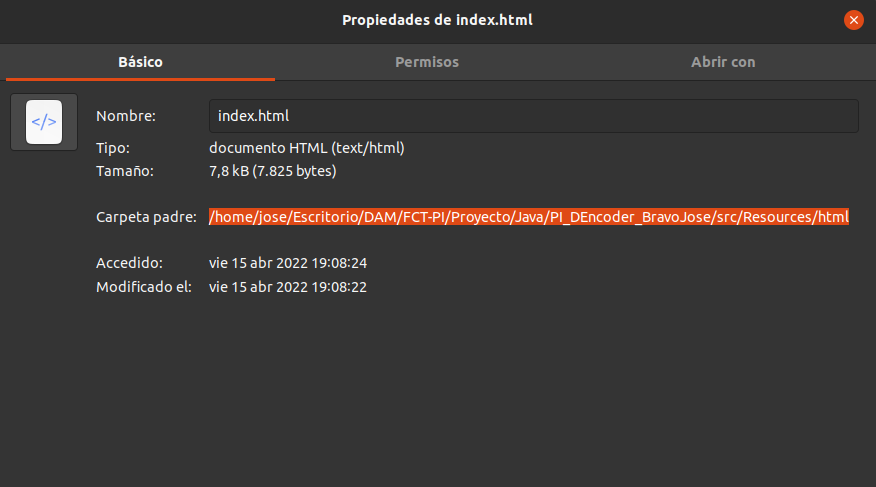
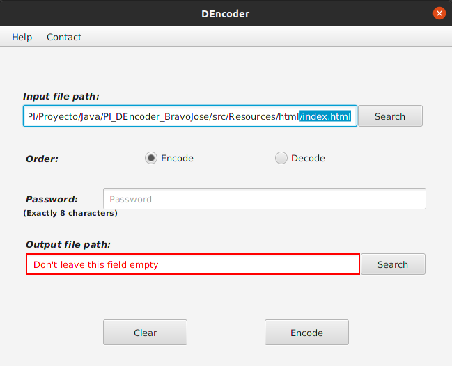
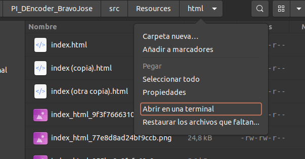
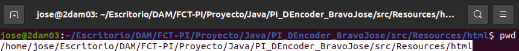

Obtener ruta SO Linux
Para obtener la ruta de un fichero en sistemas operativos Linux, se puede realizar de varias formas:
Método 1 – Desde GNOME:
Haciendo click derecho en el fichero a cifrar, se selecciona la opción “Propiedades…”, y se copia la ruta del directorio:

Como se puede observar, es la ruta hasta el directorio del fichero, pero faltaría el nombre, se debe añadir un slash (/) de separación, y posteriormente el nombre junto a la extensión, el cual puede copiarse desde la misma ventana de propiedades en el campo nombre, o escribirse de forma manual.

Método 2 – Desde la terminal:
Haciendo click en el nombre del directorio en la parte superior del visor de ficheros del sistema, se puede ver la opción abrir en una terminal.

Una vez se abra la terminal en el directorio donde se encontraba situado, se deberá escribir el comando “pwd”, una vez introducido, el sistema devuelve la ruta hasta el directorio donde se encuentra la terminal, copiaremos esta ruta (Ojo, no podemos hacerlo con control + C, debe ser haciendo click derecho y seleccionando la opción copiar).

Al igual que antes, no se incluye el nombre del fichero, se deberá añadir de manera manual escribiendo el slash (/) de separación, y el nombre del fichero.
Para volver al indice haga click en Index en la parte de abajo del visor web.